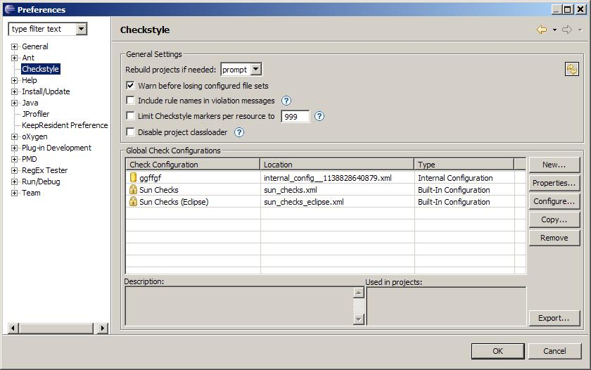
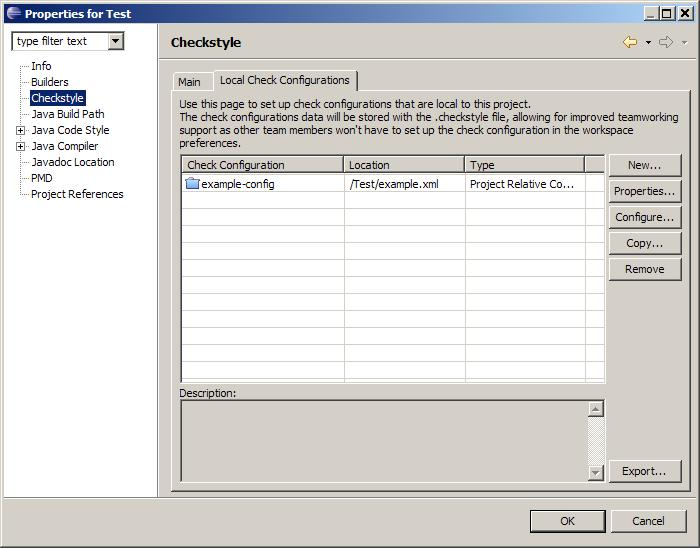

-- Working with a Team Repository --
Most software projects involve more then one person and a team repository is used to
manage and share files among the team members.
The Eclipse Checkstyle plug-in
supports working in a team environment with a repository.
The following discussion
provides the information you need to know when working in a team environment.
Traditionally Check Configurations were defined in your workspace preferences alone.
They were stored on your local file system by Eclipse in a location that is not shared
via your team repository (in the plugins state location inside the workspace).
This
made it hard to consistently share Check Configuration setups among development teams.
While release 4.0.0 of the eclipse-cs plugin contained some features to ease this problem
version 4.1.0 completely and thorougly solves this problem.
Version 4.1.0 does this by separating Global and Local Check Configurations.
Global Configurations resemble the traditional configuration in the
workspace preferences, known from previous releases.
Global Check Configuration
setups are stored in the plugins state location like before.
This means that these
cannot be shared via team repository
On the positive side Global Configurations can
be used by multiple projects.

Local Configurations are introduced with version 4.1.0 of the
plugin.
Local Configurations are set up on the Checkstyle properties page of a
project, note the new tab Local Check Configurations
This works very much
like configuring check configurations in the workspace preferences, except that Local
Check Configurations are stored within the .checkstyle file within the project
root.
This means that you can share the .checkstyle file of your project via team
repository because all necessary information for the Local Configurations are stored
therein.
This way when a developer checks out the project from the repository the
project setup will already be complete and the eclipse-cs plugin ready to use for this
project.
Of course Local Check Configurations can only be used by the project they
are configured for.

Hint: Team configurations work best when using the Project Relative configuration type or
the Remote configuration type.
|